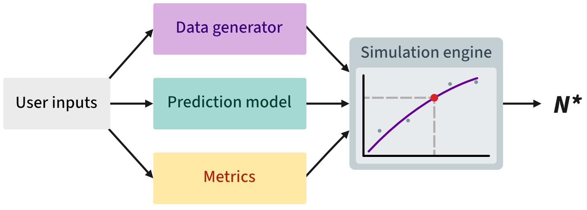
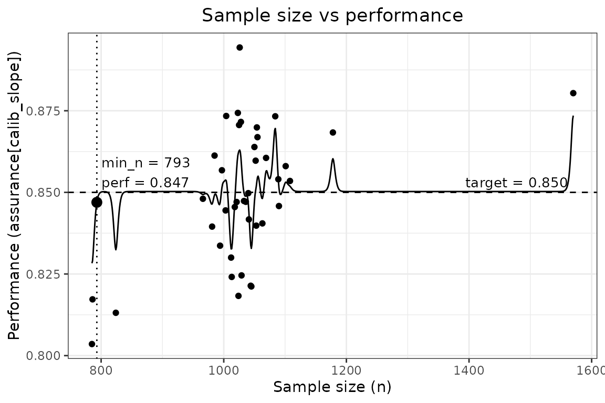
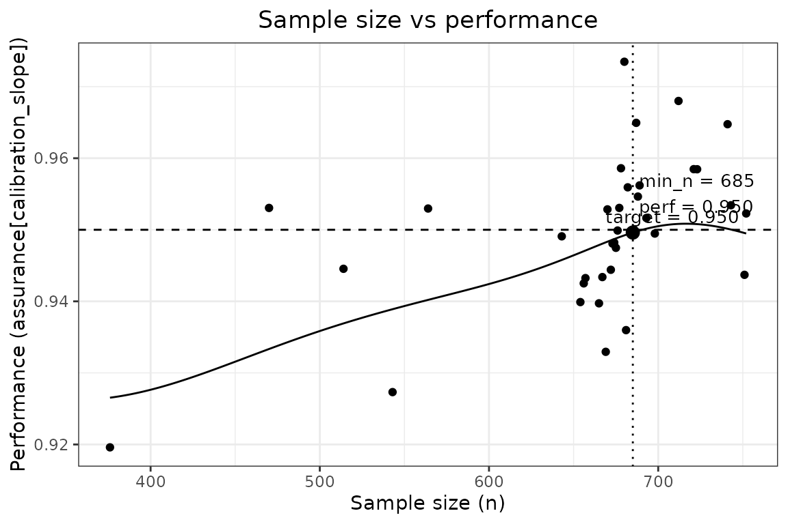

What pmsims does
pmsims estimates the minimum sample size needed to develop a prediction model to achieve a target level of performance with assurance. Rather than relying on simple rules of thumb or closed‑form formulae, pmsims uses simulation to:
- Generate synthetic datasets that reflect your target setting (outcome type, prevalence or \(R^2\), signal vs. noise predictors, and how complex the underlying signal is);
- Fit a specified model (e.g., logistic regression or linear regression);
- Evaluate a chosen performance metric (e.g., calibration slope, AUC); and
- Trace a learning curve of performance as the training size increases.

The recommended design objective is assurance: the smallest \(n\) such that a high proportion of repeated studies (e.g., 80%) meet the target performance. In pmsims, this is implemented via the 20th percentile of the simulated performance distribution at each \(n\).
Required inputs at a glance
There are three wrapper functions for binary, continuous, and survival outcomes, respectively:
All three functions share the same basic structure. The table below lists the key inputs.
| Argument | Description |
|---|---|
signal_parameters |
(int) Number of true signal predictors associated with the outcome. |
noise_parameters |
(int) Number of noise predictors unrelated to the outcome. |
complexity |
(int 1–4) Signal structure of the data-generating mechanism:
1 purely linear, 2 linear + quadratic,
3 linear + quadratic + interaction, 4 the Friedman function.
|
data_control |
(list) Optional list fine-tuning the predictors:
|
outcome_prevalence |
(num 0–1) Target prevalence of the binary outcome. |
maximum_achievable_cstatistic |
(num 0–1) Maximum achievable C-statistic with effectively unlimited data. This calibrates the data generator and is not the minimum acceptable threshold. |
maximum_achievable_rsquared |
(num 0–1) Maximum achievable R2 with effectively unlimited data. This calibrates the data generator and is not the minimum acceptable threshold. |
maximum_achievable_cindex |
(num 0–1) Maximum achievable concordance index with effectively unlimited data. This calibrates the data generator and is not the minimum acceptable threshold. |
baseline_hazard |
(num > 0) Baseline hazard used by the survival data-generating mechanism. Larger values imply shorter event times, all else equal. |
censoring_rate |
(num 0–1) Proportion of individuals expected to be censored in the simulated survival datasets. |
model |
(chr) Model used for fitting: "glm" / "lm" /
"coxph" depending on the outcome, or one of the experimental
machine-learning options "lasso", "ridge",
"rf", "xgboost".
|
metric |
(chr) Performance metric used to estimate the minimum
required sample size. Metric identifiers take one canonical form throughout the
package: "calibration_slope", "calibration_in_the_large",
"auc", "r2", "cindex", and
"csse" (calibration slope squared error).
|
target_performance |
(num) Minimum acceptable performance in the units of the chosen metric (e.g. calibration slope ≥ 0.9), used as the threshold for selecting the required sample size. |
n_reps_total |
(int) Total number of simulation replications. |
mean_or_assurance |
(chr) Criterion for summarising results; "assurance" recommended.
|
Notes:
maximum_achievable_*represents the best plausible performance with effectively unlimited data and calibrates the data generator.target_performanceis the minimum acceptable performance threshold used to determine the required sample size.complexityanddata_controldescribe the data-generating mechanism, not the model you plan to fit. The same configuration is used both to calibrate the generator againstmaximum_achievable_*and to simulate the data, so a more complex signal generally implies a larger required sample size.- For reproducibility, set a random seed (
set.seed()).
Binary-outcome example
We target the smallest n that meets the assurance criterion.
set.seed(123)
binary_example <- simulate_binary(
signal_parameters = 20,
noise_parameters = 0,
complexity = 1,
data_control = list(correlation = 0.3),
outcome_prevalence = 0.30,
maximum_achievable_cstatistic = 0.80,
model = "glm",
metric = "calibration_slope",
target_performance = 0.85,
n_reps_total = 1000,
mean_or_assurance = "assurance"
)
binary_example#> ┌────────────────────────────────────────┐
#> │ pmsims: Sample size simulation summary │
#> └────────────────────────────────────────┘
#>
#> ──────────────────────────────────── Inputs ────────────────────────────────────
#>
#> Data-generating scenario
#> Outcome Binary
#> Prevalence 0.30
#> Predictors 20 signal
#> Predictor distribution Normal
#> Predictor correlation 0.30
#> Signal form Linear
#>
#> Model and performance
#> Model Logistic regression
#> Large-sample C-statistic 0.800
#> Sample-size criterion Calibration slope ≥ 0.850
#>
#> Simulation
#> Mode Assurance
#> Replications 1,000
#>
#> ──────────────────────────────────── Results ───────────────────────────────────
#>
#> Minimum sample size 985
#>
#> Performance at N = 985
#> Calibration slope 0.849 (target ≥ 0.850)
#> C-statistic 0.794
#>
#> Running time 2 minutes 43 seconds
#>
#> ────────────────────────────────────────────────────────────────────────────────
#> Assurance mode selects N so that the target is achieved with high probability
#> across repeated datasets.The printed summary is a human-readable report. Implementation detail
— the internal metric identifiers, the engine settings used for the
search, and any quantities recorded on an internal search scale — is
available through summary(binary_example) or, equivalently,
print(binary_example, verbose = TRUE).
Plot the estimated learning curve and identified sample size:
plot(binary_example)
Continuous-outcome example
continuous_example <- simulate_continuous(
signal_parameters = 15,
noise_parameters = 0,
complexity = 1,
data_control = list(correlation = 0.3),
maximum_achievable_rsquared = 0.50,
model = "lm",
metric = "calibration_slope",
target_performance = 0.95,
n_reps_total = 1000,
mean_or_assurance = "assurance"
)
continuous_example#> ┌────────────────────────────────────────┐
#> │ pmsims: Sample size simulation summary │
#> └────────────────────────────────────────┘
#>
#> ──────────────────────────────────── Inputs ────────────────────────────────────
#>
#> Data-generating scenario
#> Outcome Continuous
#> Predictors 15 signal
#> Predictor distribution Normal
#> Predictor correlation 0.30
#> Signal form Linear
#>
#> Model and performance
#> Model Linear regression
#> Large-sample R² 0.500
#> Sample-size criterion Calibration slope ≥ 0.950
#>
#> Simulation
#> Mode Assurance
#> Replications 1,000
#>
#> ──────────────────────────────────── Results ───────────────────────────────────
#>
#> Minimum sample size 685
#>
#> Performance at N = 685
#> Calibration slope 0.950 (target ≥ 0.950)
#> R² 0.488
#>
#> Running time 1 minute 51 seconds
#>
#> ────────────────────────────────────────────────────────────────────────────────
#> Assurance mode selects N so that the target is achieved with high probability
#> across repeated datasets.
plot(continuous_example)